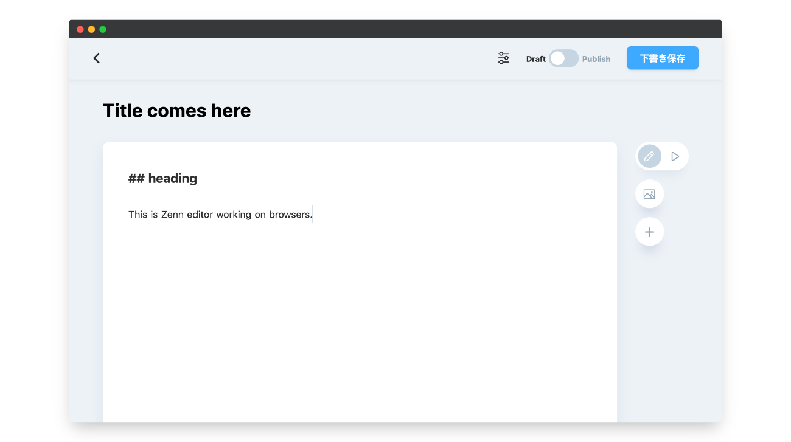

Zenn
Zenn
 Tech
Tech
このページではZennで記事や本を作成するときの執筆環境について紹介します。
Zennの執筆方法は２種類
Zennのコンテンツは次のいずれかの方法で作成します。
1.Webエディター
ブラウザ上で動くエディターです。Zennにログインした状態で使用します。
▶ショートカットを使用しよう
2.ローカルのテキストエディター＋CLI


自分の好きな環境で執筆したい方はGitHubリポジトリとの連携機能を利用することをおすすめします。リポジトリ連携をすると、特定のブランチに変更があったときに自動でコンテンツがzenn.devに反映されるようになります。
📘 Zenn と GitHubリポジトリを連携する→
リポジトリ連携時には、ローカルでmarkdownファイルを作成し、好きなテキストエディターで編集を行います。ZennCLIを使うことでブラウザでプレビューしながら執筆することが可能になります。
📘 Zenn CLI を導入する→
オンラインエディターを使う場合も、CLIを使う場合もmrkdownの書き方は変わりません。具体的な記法は下記のリンク先をご覧ください。
📘 Zenn のmarkdown記法 →

GitHubで編集を提案

Zenn公式
Zennの使い方や開発状況を発信する公式アカウントです。
フォロー
Discussion

ログインするとコメントできます
Login